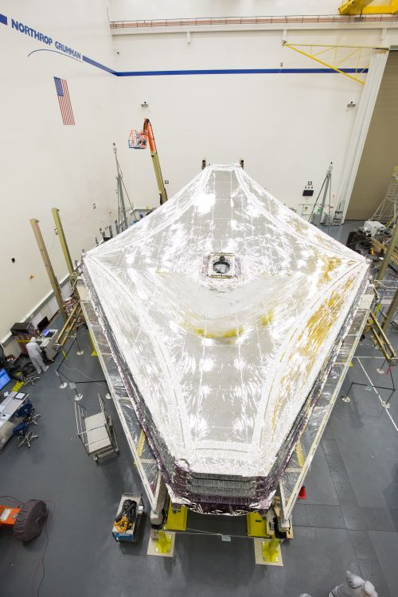

The JWST's Mission
The most significant things we can think about, when we think about Apollo, is that it has opened for us, for us being the World, a challenge of the future.
The door is now cracked, but the promise of that future lies in the young people, not just in America, but the young people all over the world. Learning to live and learning to work together.
In order to remind all the peoples of the World, in so many countries throughout the world, that this is what we all are striving for in the future, Jack has picked up a very significant rock,
typical of what we have here in the valley of Taurus Littrow. It's a rock composed of many fragments, of many sizes, and many shapes, probably from all parts of the Moon, perhaps billions of years old.
But a rock of all sizes and shapes, fragments of all sizes and shapes, and even colors that have grown together to become a cohesive rock outlasting the nature of Space, sort of living together in a very coherent,
very peaceful manner. When we return this rock or some of the others like it to Houston, we'd like to share a piece of this rock with so many of the countries throughout the world.
We hope that this will be a symbol of what our feelings are, what the feelings of the Apollo Program are, and a symbol of mankind that we can live in peace and harmony in the future.
Look again at that dot. That's here. That's home. That's us. On it everyone you love, everyone you know, everyone you ever heard of, every human being who ever was, lived out their lives.
The aggregate of our joy and suffering, thousands of confident religions, ideologies, and economic doctrines, every hunter and forager, every hero and coward, every creator and destroyer of civilization,
every king and peasant, every young couple in love, every mother and father, hopeful child, inventor and explorer, every teacher of morals, every corrupt politician, every "superstar," every "supreme leader,"
every saint and sinner in the history of our species lived there--on a mote of dust suspended in a sunbeam.
The view of the earth from the moon fascinated me - a small disk, 240,000 miles away. It was hard to think that that little thing held so many problems, so many frustrations.
Raging nationalistic interests, famines, wars, pestilence don't show from that distance. I'm convinced that some wayward stranger in a space-craft, coming from some other part of the heavens,
could look at earth and never know that it was inhabited at all. But the samw wayward stranger would certainly know instinctively that if the earth were inhabited,
then the destinies of all who lived on it must inevitably be interwoven and joined. We are one hunk of ground, water, air, clouds, floating around in space. From out there it really is 'one world'.
